Team
University of Waterloo Faculty

Dr. Mehrdad Pirnia
Research Focus: research focus is enhancing the operation and planning of energy and transportation systems through artificial intelligence, optimization, and stochastic techniques.

Paul Parker

Suzanne Kearns

Elham Soufiani
Industry Collaborators
PhD Students: Current and Graduated
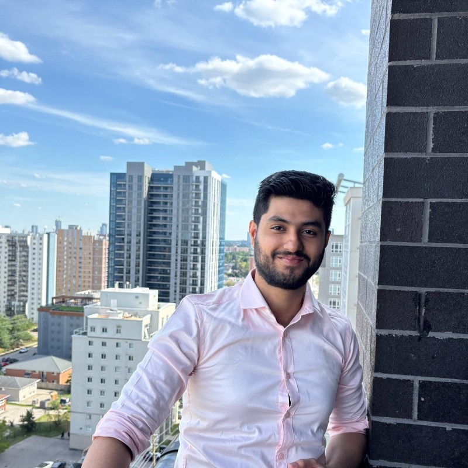
Chirag Seth
Research topic: Learning-based models for fault detection and diagnosis of HVAC units.
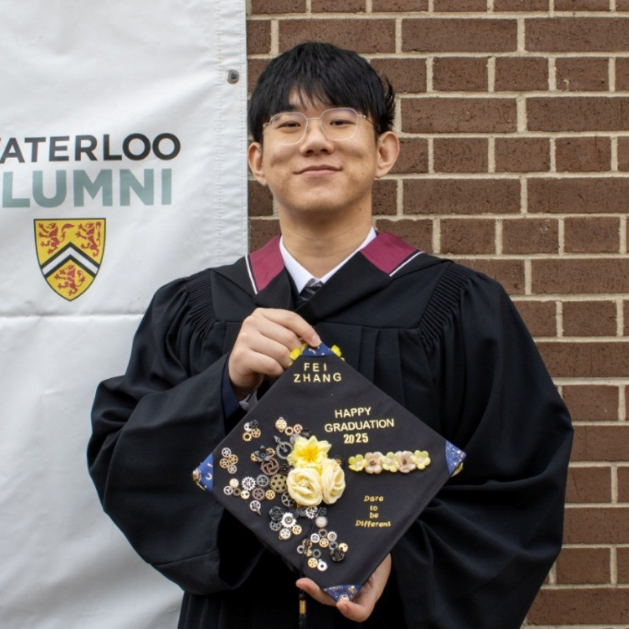
Fei Zhang
Research topic: Inverse optimization in sustainable energy systems.
Pablo Verdugo Rivadeneira
Research topic: Aviation electrification - e-planes and airport microgrids.
Co-supervised with Dr. Claudio Canizares.
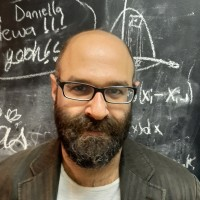
Fuat Can Beylunioglu
Research topic: Explainable neural networks for energy systems.
Co-supervised with Dr. Robert Duimering.
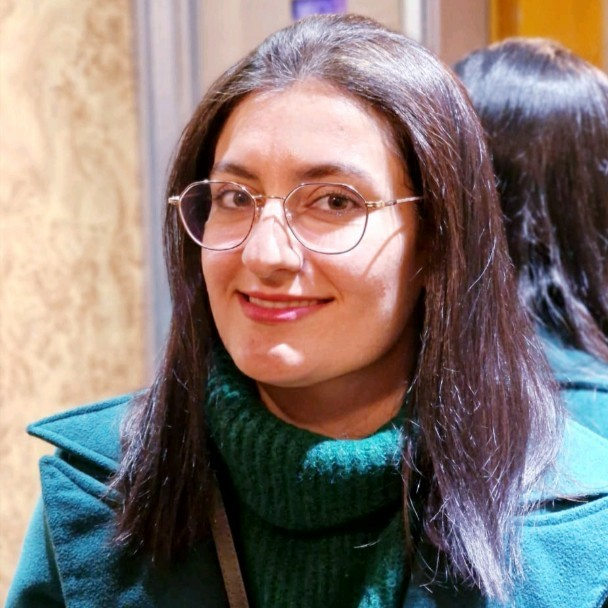
Marzieh Mozafari
Research topic: Bilevel programming models for multimodal transportation systems.
Enrique Vera
Research topic: GIS-based stochastic models for planning multi micro-grids.
Co-supervised with Dr. Claudio Canizares.
Carlos Ceja Espinosa
Research topic: Distributed optimization for the operations of coordinated microgrids.
Co-supervised with Dr. Claudio Canizares.
MASc Students: Current and Graduated
Joshua Aivin
Research topic: Learning-based energy management systems for airports with electric planes.
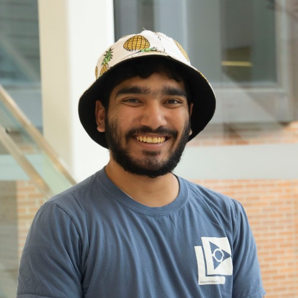
Aamer Akhand
Research topic: Socio-techno-economic analysis of hydrogen systems in electric and transportation systems.
Co-supervised with Dr. XiaYu Wu.
Chirag Seth
Research topic: Reinforcement learning models for IoT-based supply chain systems.
Co-supervised with Dr. Jim Bookbinder.
Ali Rafiee
Research topic: Inverse optimization for characterizing energy models.
Co-supervised with Dr. Michael Pavlin.
Amir Lotfi
Research topic: Constraint-guided machine learning for energy systems.
Menna Khaled
Research topic: Impact of pandemic on electricity markets.
Postdoctoral Fellows: Current and Past
Elham Soufiani
Research topic: Developing stochastic and optimization models for regional aviation electrification.
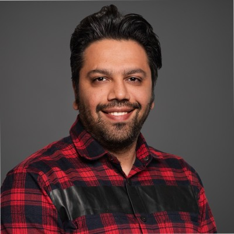
Ali Keyvandarian
Research topic: IoT-based supply chain for perishable produce.
Maria Hanna
Research topic: Aviation electrification for regional flights.
Co-supervised with Dr. Claudio Canizares.
Shahab Pirnia
Research topic: Electric planes for tourism.
Co-supervised with Dr. Daniel Scott.
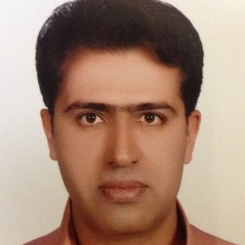
Hassan Shavandi
Research topic: Non-convex pricing in electricity markets.
Undergrad Research Assistants (URA-USRA)
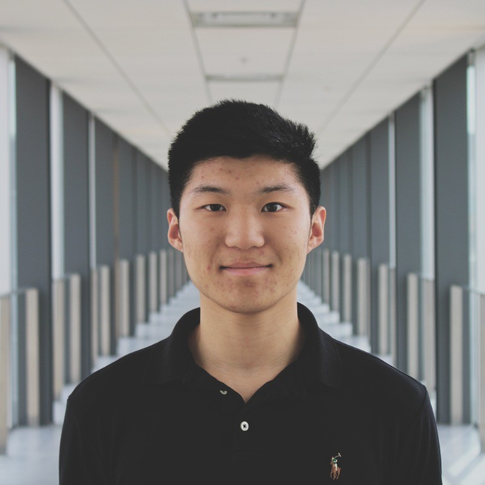
Maxwell Lou
Research topic: ML-based power system planning.

Sharon Gupta
Research topic: Forecasting SoH of electric plane batteries.
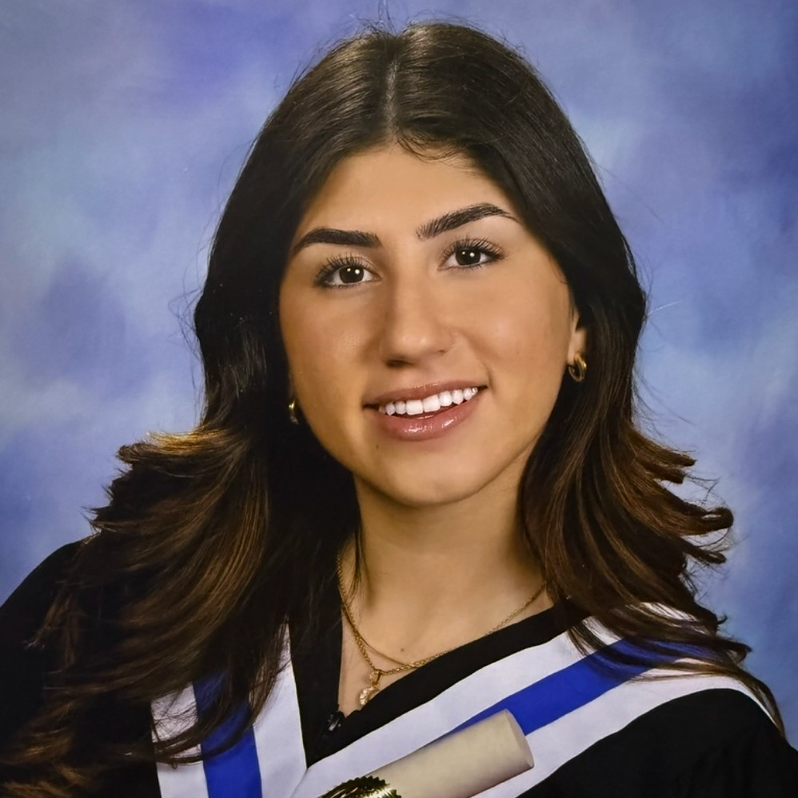
Elika Farokhi
Research topic: Designing website for the electric plane project and research.
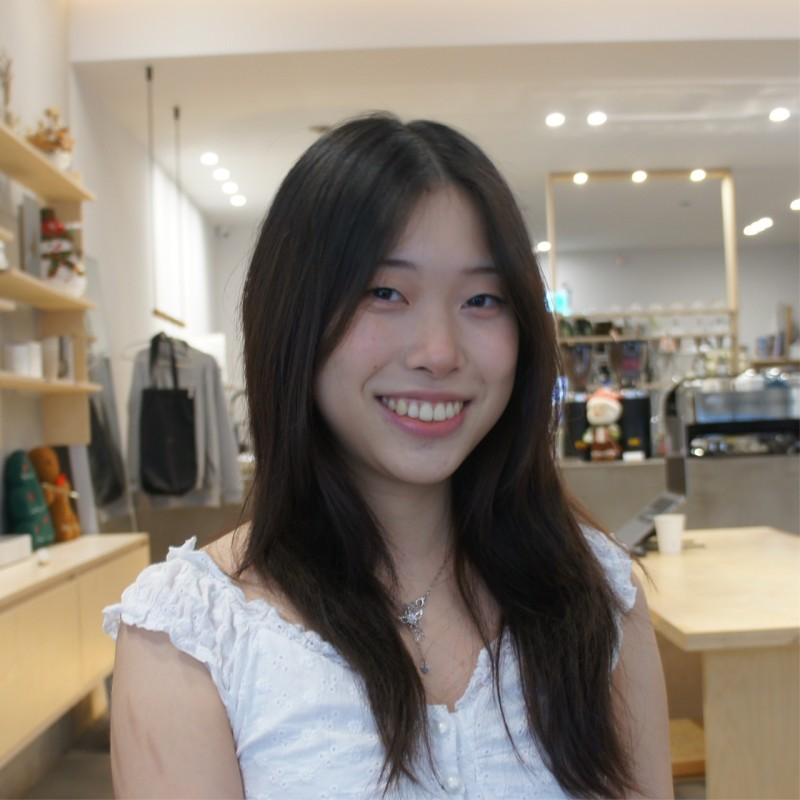
Nancy Zhu
Research topic: Survey on electric plane readiness.

Bennie Singer
Research topic: Network models for regional electric aviation.
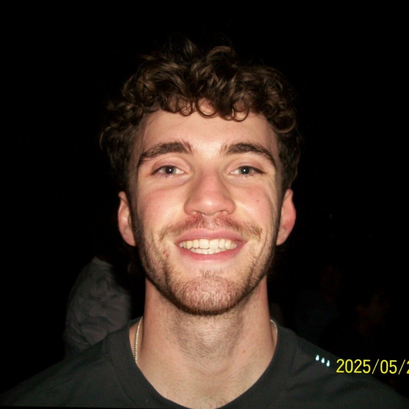
Benjamin Fogerty
Research topic: AI for energy systems.
Hongyi Xu (MITACS-Globalink)
Research topic: Microgrids for aviation electrification.
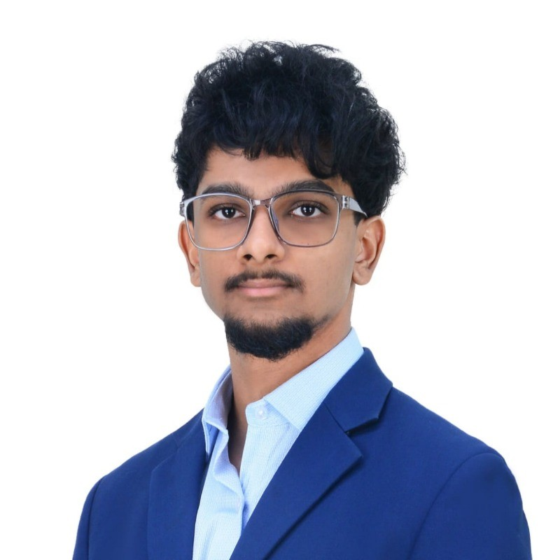
Roshan Karthik
Research topic: Electric plane battery performance during idle periods.
David Lu
Research topic: Designing back-end for second e-plane.
Srinjoy Chatterjee (MITACS-Globalink)
Research topic: IoT-based supply chain for perishable produce.
Joshua Aivin
Research topic: Studying the viability of electric planes for Canadian skies.
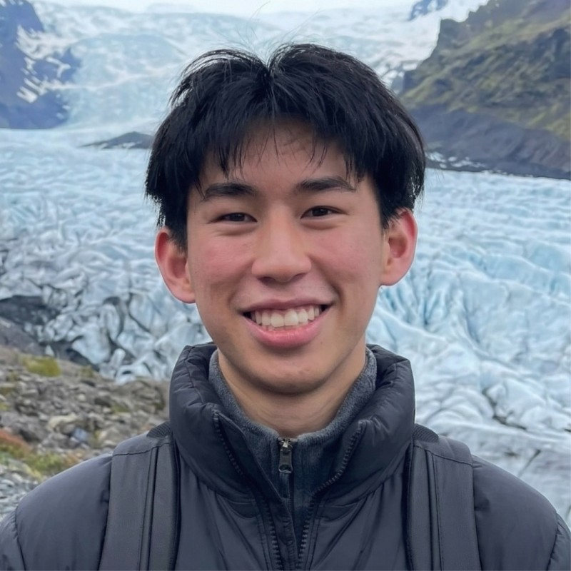
Nathan Lu
Research topic: Identification of e-plane flight stages using ML.
Fei Zhang
Research topic: ML-based classification of products for cross-docking vs warehousing.
Claudia De Fazio
Research topic: Analyzing flight paths for electrification.
Carter Ibach
Research topic: Analyzing flight paths for electrification.
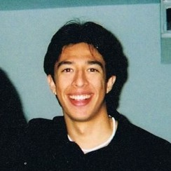
Mateo Alvarez
Research topic: Contribution of storage capacity for GHG reduction.
Paul Chen
Research topic: Simulation models for Tesla PowerWall role in system reliability.
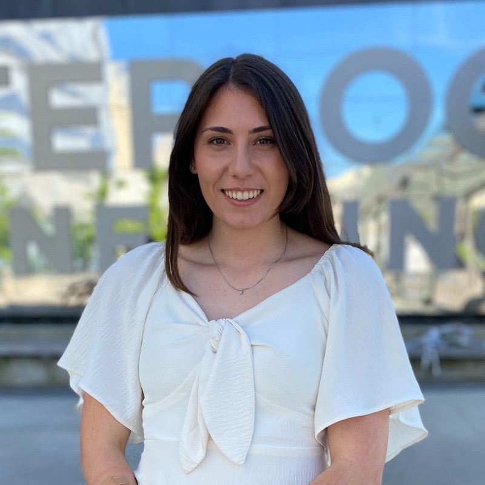
Sophia Stupalo
Research topic: R-Shiny platform for analysis of engineering attributes.
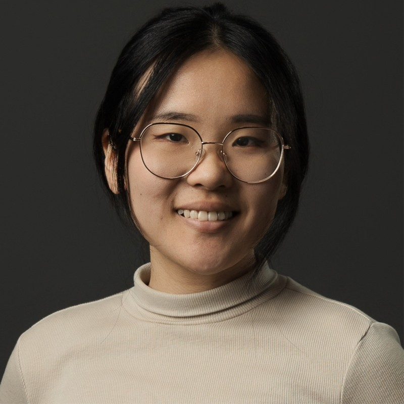
Jasmin Zhou
Research topic: Reinforcement learning in energy management systems.